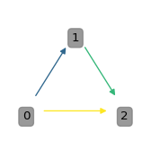

import matplotlib.pyplot as plt
from tvbo import plot
fig, ax = plt.subplots()
plot.network.plot_model('Generic2dOscillator', ax=ax)
plot.network
import matplotlib.pyplot as plt
from tvbo import plot
fig, ax = plt.subplots()
plot.network.plot_model('Generic2dOscillator', ax=ax)
| Name | Description |
|---|---|
| add_arrow | add an arrow to a line. |
| compute_bezier_midpoint | Compute the midpoint of a quadratic Bézier curve at a given t. |
| compute_midpoint | Compute the midpoint of a quadratic Bézier curve. |
| count_directed_edges | Count number of edges between each directed node pair (u, v), not treating (u, v) ≡ (v, u). |
| create_colormap_legend | Create a space-efficient legend for given edge and node colormap dictionaries. |
| draw_custom_arrows | Draw custom arrows on a graph G with given positions and styles. |
| draw_custom_nodes | Custom function to draw nodes as text in a network graph. |
| draw_edge_labels | A function to draw the edge labels on the graph. The labels are extracted from the edge attributes |
| draw_edges | A function to draw the edges on the graph. Depending on the parameters, it can draw colored edges |
| draw_legend | A function to draw the legend on the graph. The legend is created based on the node types and |
| draw_nodes | A function to draw the nodes on the graph with specified attributes such as color, size, and using a specified colormap. |
| get_ax | A function to get the ax for the plot. If ax is None, a new figure and ax are created using the specified figsize. |
| get_categories_from_graph | Retrieve all unique categories from the graph’s nodes. |
| get_category_from_graph | Retrieve the category of a given node from the graph. |
| get_edge_color_mapping | Generate a color mapping for edges in graph G based on their specified attribute. |
| get_labels | Generate labels for the nodes in the graph based on the node names and ontology search results. If the label_as_symbol parameter is True, |
| get_layout | Get the layout positions for the nodes in the graph. |
| get_node_color_and_cmap | A function to get the node colors and the colormap based on node attributes such as type or degree. |
| get_node_color_mapping | Generate a color mapping for nodes in graph G based on their specified attribute. |
| get_node_size | A function to get the node size for the graph, which can be determined by various parameters including |
| hierarchy_pos | If the graph is a DAG this will return the positions to plot this in a hierarchical layout. |
| n1n2_edgecounts | Return the number of edges between nodes n1 and n2, treating (n1, n2) ≡ (n2, n1). |
| plot_multidigraph | Plots a MultiDiGraph with curved edges to visualize multiple edges between two nodes. |
| plot_ontology_graph | Plot the ontology graph using matplotlib. |
| plot_tvbo_graph | A function to plot a TVBO graph with various customizable parameters. |
| relabel_graph | A function to relabel the nodes of the graph if a relabel dictionary is provided. |
| reverse_edges | Reverse the coordinates of the positions in the pos dictionary. |
| set_axis_limits | Set the axis limits based on node positions. |
| set_plt_params | A function to set certain plt parameters. |
| validate_parameters | A function to validate and set default values for various parameters. |
plot.network.add_arrow(
line,
ax,
position=None,
direction='right',
color=None,
label='',
)add an arrow to a line.
line: Line2D object position: x-position of the arrow. If None, mean of xdata is taken direction: ‘left’ or ‘right’ color: if None, line color is taken. label: label for arrow
plot.network.compute_bezier_midpoint(p0, p1, p2, t=0.5)Compute the midpoint of a quadratic Bézier curve at a given t.
Parameters: - p0, p1, p2: Control points of the Bézier curve. - t: The parameter at which to evaluate the midpoint (default is 0.5 for true midpoint).
Returns: - tuple of (x, y) coordinates of the midpoint.
plot.network.compute_midpoint(start, end, rad)Compute the midpoint of a quadratic Bézier curve.
Parameters: - start: tuple of (x, y) coordinates of the start point. - end: tuple of (x, y) coordinates of the end point. - rad: curvature radius as a percentage.
Returns: - tuple of (x, y) coordinates of the midpoint.
plot.network.count_directed_edges(G)Count number of edges between each directed node pair (u, v), not treating (u, v) ≡ (v, u).
| Name | Type | Description |
|---|---|---|
| Dict[Tuple[Any, Any], int] | Dict[Tuple[Any, Any], int]: Mapping (u, v) → count of edges from u to v. |
plot.network.create_colormap_legend(
edge_colmap=None,
node_colmap=None,
ax=None,
fontsize=12,
title_fontsize=14,
edge_cols=8,
node_cols=8,
)Create a space-efficient legend for given edge and node colormap dictionaries.
Args: edge_colmap (dict): A dictionary where keys are labels and values are RGBA tuples for edges. node_colmap (dict): A dictionary where keys are labels and values are RGBA tuples for nodes. ax (matplotlib.axes.Axes, optional): Matplotlib axes object to draw the legend on. If None, a new figure is created. fontsize (int, optional): Font size for the legend labels. title_fontsize (int, optional): Font size for the legend titles.
plot.network.draw_custom_arrows(
G,
pos,
edge_width=1,
ax=None,
edge_colors='grey',
edge_labels=False,
scatter_edges=True,
color_by=None,
return_color_mapping=False,
radius=-0.3,
**kwargs,
)Draw custom arrows on a graph G with given positions and styles.
| Name | Type | Description | Default |
|---|---|---|---|
| G | networkx.Graph | The graph on which arrows will be drawn. | required |
| pos | dict | A dictionary with nodes as keys and positions as values. Positions should be tuples of (x, y) coordinates. | required |
| edge_width | int | Width of the edges. Defaults to 1. | 1 |
| ax | matplotlib.axes.Axes | Matplotlib axes object to draw the arrows on. If None, the current axes will be used. Defaults to None. | None |
| edge_colors | str or list | Color(s) of the edges. If a single string, all edges will have the same color. If a list, it should be the same length as the number of edges. Defaults to “grey”. | 'grey' |
| scatter_edges | bool | If True, scatter multiple edges between nodes to make them distinguishable. Defaults to False. | True |
| **kwargs | Any | Additional keyword arguments to customize arrow properties. This can include: connectionstyle (str, optional): The connection style of the arrows. More info: https://matplotlib.org/stable/gallery/userdemo/connectionstyle_demo.html. Defaults to “arc3, rad=-0.3”. arrowstyle (str, optional): The style of the arrow. Defaults to “-|>,head_length=0.4,head_width=0.2”. mutation_scale (float, optional): The scale factor for the arrow head. Defaults to 10.0. shrinkA (float, optional): Shrink factor at the start of the arrow. Defaults to 15. shrinkB (float, optional): Shrink factor at the end of the arrow. Defaults to 15. | {} |
| Name | Type | Description |
|---|---|---|
| Optional[Dict[Any, Any]] | Optional[Dict[Any, Any]]: Color mapping if return_color_mapping is True, otherwise None. |
import networkx as nx
import matplotlib.pyplot as plt
from tvbo.plot.network import draw_custom_arrows, draw_custom_nodes
G = nx.DiGraph()
G.add_edges_from([(0, 1, {"type": 1}), (1, 2, {"type": 2}), (0, 2, {"type": 3})])
pos = {0: (0, 0), 1: (1, 1), 2: (2, 0)}
fig, ax = plt.subplots(figsize=(2,2))
draw_custom_nodes(G, pos, ax=ax)
draw_custom_arrows(G, pos, ax=ax, color_by="type", edge_colors="viridis")
ax.axis("off");
This function uses FancyArrowPatch from matplotlib.patches to draw arrows.
plot.network.draw_custom_nodes(
G,
pos,
labels=None,
font_size=10,
ax=None,
node_colors=None,
alpha=0.8,
facecolor=None,
edgecolor=None,
)Custom function to draw nodes as text in a network graph.
G : networkx.Graph The graph on which nodes will be drawn. pos : dict A dictionary with nodes as keys and positions as values. Positions should be tuples of (x, y) coordinates. labels : dict, optional A dictionary with node labels. If None, nodes are labeled with node names. font_size : int, optional The font size of the node labels (default is 10). ax : matplotlib.axes.Axes, optional Matplotlib axes object to draw the nodes on. If None, the current axes will be used (default is None). node_colors : dict or str, optional A dictionary specifying the color for each node or a single color for all nodes (default is None).
list A list of text objects for the node labels.
plot.network.draw_edge_labels(g, pos, ax, params)A function to draw the edge labels on the graph. The labels are extracted from the edge attributes and can be customized using various parameters in the params dictionary.
Parameters: g (networkx.Graph): The graph on which the edge labels are to be drawn. pos (dict): The positions of the nodes. ax (matplotlib.axes._axes.Axes): The ax on which the edge labels are to be drawn. params (dict): A dictionary with various parameters including ‘edge_font_size’.
Returns: None
plot.network.draw_edges(g, pos, ax, params)A function to draw the edges on the graph. Depending on the parameters, it can draw colored edges and adjust the width of the edges.
Parameters: g (networkx.Graph): The graph on which the edges are to be drawn. pos (dict): The positions of the nodes. ax (matplotlib.axes._axes.Axes): The ax on which the edges are to be drawn. params (dict): A dictionary with various parameters including ‘colored_edges’ and ‘edge_width’.
Returns: None
plot.network.draw_legend(g, ax, params)A function to draw the legend on the graph. The legend is created based on the node types and their respective colors, which are derived from the ‘tvb_colors’ parameter in the params dictionary.
Parameters: g (networkx.Graph): The graph on which the legend is to be drawn. ax (matplotlib.axes._axes.Axes): The ax on which the legend is to be drawn. params (dict): A dictionary with various parameters including ‘tvb_colors’ and ‘c_order’.
Returns: None
plot.network.draw_nodes(g, pos, node_color, cmap, node_size, ax, params)A function to draw the nodes on the graph with specified attributes such as color, size, and using a specified colormap. Additional parameters like linewidth and alpha are taken from the params dictionary.
Parameters: g (networkx.Graph): The graph on which the nodes are to be drawn. pos (dict): The positions of the nodes. node_color: The color of the nodes, specified either as a single color or a list of colors. cmap: The colormap for the nodes. node_size: The size of the nodes, specified either as a single size or a list of sizes. ax (matplotlib.axes._axes.Axes): The ax on which the nodes are to be drawn. params (dict): A dictionary with various parameters including ‘alpha’ and ‘node_linewidth’.
Returns: None
plot.network.get_ax(ax, figsize)A function to get the ax for the plot. If ax is None, a new figure and ax are created using the specified figsize.
Parameters: ax (matplotlib.axes._axes.Axes or None): The ax parameter passed to the function. If None, a new ax is created. figsize (tuple): The size of the figure, specified as a tuple of width and height.
Returns: matplotlib.axes._axes.Axes: The ax for the plot.
plot.network.get_categories_from_graph(G)Retrieve all unique categories from the graph’s nodes.
G : networkx.Graph The graph from which categories are to be retrieved.
list A sorted list of unique categories from the graph.
plot.network.get_category_from_graph(G, node)Retrieve the category of a given node from the graph.
G : networkx.Graph The graph containing the node. node : hashable The node for which the category is to be retrieved.
str The category of the node.
plot.network.get_edge_color_mapping(G, colormap='viridis', color_by='type')Generate a color mapping for edges in graph G based on their specified attribute.
G : networkx.Graph The graph containing the edges with the specified attribute. colormap : str, optional The name of the colormap to use (default is ‘viridis’). color_by : str, optional The edge attribute to color by (default is ‘type’).
edge_colors : dict A dictionary mapping edge attributes to colors.
plot.network.get_labels(g, label_as_symbol)Generate labels for the nodes in the graph based on the node names and ontology search results. If the label_as_symbol parameter is True, the labels are formatted as LaTeX symbols. Additionally, specific substrings (“_RWW”) are removed from the labels.
Parameters: g (networkx.Graph): The graph object containing the nodes for which labels are to be generated. label_as_symbol (bool): A flag indicating whether to format the labels as LaTeX symbols.
Returns: dict: A dictionary where keys are node names and values are the corresponding labels.
plot.network.get_layout(
G,
layout_type='spring',
k_factor=1,
save_pos=None,
use_precomputed_pos=None,
)Get the layout positions for the nodes in the graph.
G : networkx.Graph The graph for which the layout positions are calculated. layout_type : str, optional The type of layout algorithm to use (‘spring’, ‘kamada’, etc.) (default is “spring”). k_factor : float, optional Scaling factor for the layout algorithm (default is 1). save_pos : str, optional Path to save the computed positions to a file (default is None). use_precomputed_pos : str, optional Path to a file with precomputed positions (default is None).
dict A dictionary with nodes as keys and positions as values.
plot.network.get_node_color_and_cmap(g, params=None)A function to get the node colors and the colormap based on node attributes such as type or degree.
Parameters: g (networkx.Graph): The graph for which the node colors and colormap are to be generated. params (dict): A dictionary with various parameters including node_filling and tvb_colors.
Returns: tuple: A tuple with the node colors and the colormap.
plot.network.get_node_color_mapping(
G,
node_colors='math_type',
colors='tvb',
return_categories=False,
)Generate a color mapping for nodes in graph G based on their specified attribute.
G : networkx.Graph The graph containing the nodes with the specified attribute. node_colors : str, optional The node attribute to color by (default is ‘math_type’). colors : str, optional The color scheme to use (default is ‘tvb’).
node_color_dict : dict A dictionary mapping node attributes to colors. categories : dict A dictionary mapping nodes to their categories.
plot.network.get_node_size(g, params=None)A function to get the node size for the graph, which can be determined by various parameters including the degree of the nodes, the length of the labels, or a specified factor.
Parameters: g (networkx.Graph): The graph for which the node size is to be generated. pos (dict): The positions of the nodes. labels (dict): The labels of the nodes. params (dict): A dictionary with various parameters including ‘node_size_by’ and ‘node_size_factor’.
Returns: list or int: A list with the node sizes or a single integer representing a uniform node size for all nodes.
plot.network.hierarchy_pos(
G,
root=None,
width=1.0,
vert_gap=0.2,
hor_gap=1,
vert_loc=0,
xcenter=0.5,
direction='down',
vert_scatter=0.0,
)If the graph is a DAG this will return the positions to plot this in a hierarchical layout.
G: the graph (must be a DAG) root: the root node of current branch width: horizontal space allocated for this branch vert_gap: gap between levels of hierarchy hor_gap: gap between nodes within the same level vert_loc: vertical location of root xcenter: horizontal location of root direction: ‘down’ for top-down layout, ‘up’ for bottom-up layout vert_scatter: vertical scatter factor for nodes on the same level
plot.network.n1n2_edgecounts(G, n1, n2, edge_counts=None)Return the number of edges between nodes n1 and n2, treating (n1, n2) ≡ (n2, n1).
| Name | Type | Description | Default |
|---|---|---|---|
| G | networkx.Graph or MultiGraph | Input graph. | required |
| n1 | hashable | First node identifier. | required |
| n2 | hashable | Second node identifier. | required |
| edge_counts | dict | Precomputed output from count_directed_edges(G). | None |
| Name | Type | Description |
|---|---|---|
| int | int | Number of edges between n1 and n2, regardless of direction. |
plot.network.plot_multidigraph(G, figsize=(12, 8))Plots a MultiDiGraph with curved edges to visualize multiple edges between two nodes.
| Name | Type | Description | Default |
|---|---|---|---|
| G | networkx.MultiDiGraph | The MultiDiGraph to be plotted. | required |
| figsize | Tuple[int, int] | Figure size. Defaults to (12, 8). | (12, 8) |
| Name | Type | Description |
|---|---|---|
| None | None |
plot.network.plot_ontology_graph(
G,
node_size_factor=10,
draw_labels=False,
edge_width=1.0,
k_factor=1,
colors='viridis',
edge_colors='grey',
preferred_label='symbol',
alternative_label='label',
font_size=12,
legend=True,
edge_legend=True,
ax=None,
colorby='category',
**kwargs,
)Plot the ontology graph using matplotlib.
| Name | Type | Description | Default |
|---|---|---|---|
| G | networkx.DiGraph | A directed graph representation of the ontology. | required |
| node_size_factor | int | Factor by which node size is multiplied. Defaults to 10. | 10 |
| draw_labels | bool | Whether to draw node labels. Defaults to False. | False |
| edge_width | float | Width of the edges. Defaults to 1.0. | 1.0 |
| k_factor | float | Scaling factor for the layout algorithm. Defaults to 1. | 1 |
| colors | str or list | Color map or list of colors for nodes. Defaults to “viridis”. | 'viridis' |
| edge_colors | str or list | Color map or list of colors for edges. Defaults to “grey”. | 'grey' |
| preferred_label | str | Node attribute to use as the preferred label. Defaults to “symbol”. | 'symbol' |
| alternative_label | str | Node attribute to use as the alternative label. Defaults to “label”. | 'label' |
| font_size | int | Font size for labels. Defaults to 12. | 12 |
| legend | bool | Whether to draw the legend. Defaults to True. | True |
| edge_legend | bool | Whether to include edge types in the legend. Defaults to True. | True |
| ax | matplotlib.axes.Axes | Matplotlib axes object to draw the graph on. If None, a new figure is created. Defaults to None. | None |
| colorby | str | Node attribute to determine the node colors. Defaults to “category”. | 'category' |
| **kwargs | Any | Additional keyword arguments for node and edge drawing functions. | {} |
plot.network.plot_tvbo_graph(g, ax=None, **kwargs)A function to plot a TVBO graph with various customizable parameters.
Parameters: g (networkx.Graph): The graph to be plotted. kwargs: Various other optional parameters to customize the plot.
Returns: None
plot.network.relabel_graph(g, relabel)A function to relabel the nodes of the graph if a relabel dictionary is provided.
Parameters: g (networkx.Graph): The graph to be relabeled. relabel (dict): A dictionary with the relabeling information.
Returns: None
plot.network.reverse_edges(pos)Reverse the coordinates of the positions in the pos dictionary.
pos : dict A dictionary with nodes as keys and (x, y) coordinates as values.
dict A dictionary with nodes as keys and reversed (y, x) coordinates as values.
plot.network.set_axis_limits(pos, ax)Set the axis limits based on node positions.
pos : dict A dictionary with nodes as keys and positions as values. ax : matplotlib.axes.Axes The matplotlib axes object to set the limits on.
plot.network.set_plt_params(rc_params=None)A function to set certain plt parameters.
Returns: None
plot.network.validate_parameters(params=None)A function to validate and set default values for various parameters.
Parameters: params (dict): The parameters passed to the function.
Returns: dict: The validated and updated parameters.